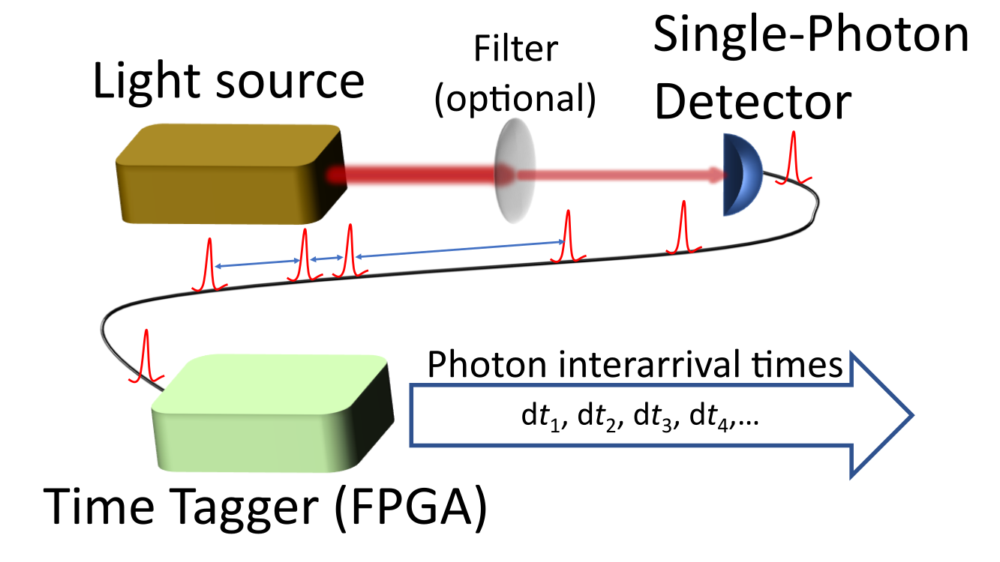

This tool is similar to the
G(2) calculator. It also calculates the second-order correlation function G^(2)(t) for both start-multistop and set of start-single stop coincidences. Input file should be a time interval series with tab or line separated values of time delays between consecutive photon detections in text format. Attenuated laser should be used to collect detector data, because it should result in unit second order correlation function for an ideal detector. For more details see Refs.